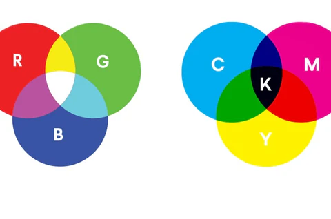

Je computerscherm bestaat uit allemaal pixels. Achter een zo'n pixel zitten drie lampjes: een rode, een groene en een blauwe, vandaar de naam RGB. Die drie lampjes kunnen allemaal een verschillende sterkte hebben. Je kan alle 256 waarden kiezen tussen de 0 en 255. Deze waarden bepalen de intensiteit van één pixel. Als je het rode lampje op 250 zet en de gele en blauwe op 0, is de pixel rood. Om dit op te schrijven kan je niet zomaar zeggen dat het groene lampje uit moet staan. Je houdt hierbij de volgorde van RGB aan. Als je de kleur rood wilt maken, schrijf je dat als volgt op: (255,0,0). Resolutie betekent de hoeveelheid pixels van een scherm of afbeelding. Hoe hoger de resolutie is, hoe scherper de afbeelding.
Het mengen van roode, groene en blauwe pixels werkt anders dan het mengen van verf. Als je met verf rood, groen en blauw mengt, krijg je de kleur zwart. Als je de drie lampjes allemaal op de hoogste waarde (255) zet, krijg je wit. Als je met verf rood en groen zou mengen, krijg je bruin. Als je lampjes rood en groen een hoge waarde geeft en rood uit zet, krijg je geel.
Hierboven staat het kleurmodel RGB beschreven, maar er is nog een ander kleurmodel, namelijk CMYK. Dit staat voor cyan, magenta, yellow en key. De naam key wordt gebruikt voor zwart, omdat de letter B voor verwarring zou kunnen zorgen. Dit zou namelijk black en blue kunnen betekenen. Als je de waarden van rood, groen en blauw op 255 zet, wordt de kleur samen wit. Als je de waardes van cyan, magenta en yellow op 255 zet, krijg je zwart. Dit is de reden dat printers met de kleuren cyan, magenta, yellow en key werken.